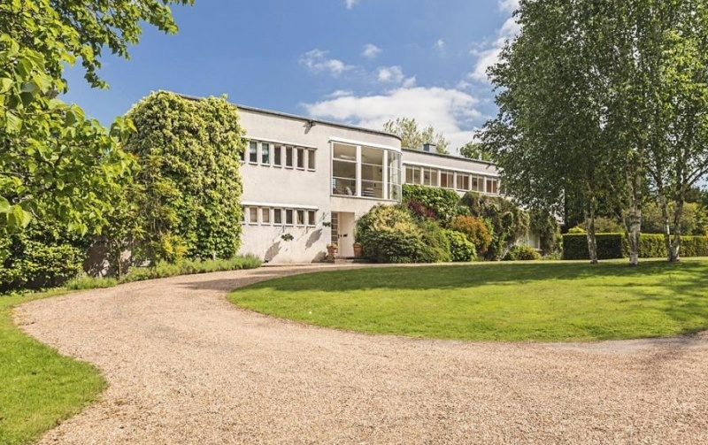
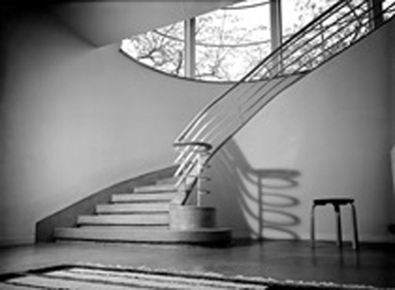
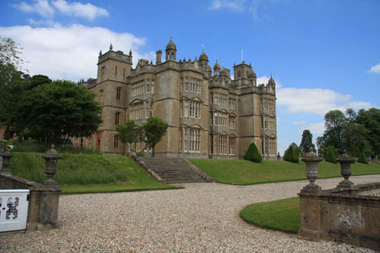

Shrub's Wood is a Grade II* listed 'Moderne' country house in Chalfont St Giles, Buckinghamshire. It was designed by Erich Mendelsohn & Serge Chermayeff in 1933/4. Shrub's Wood was originally named Nimmo House, before being renamed by Bridget D'Oyly Carte when she bought the property in 1949. Used in this episode as the 'Home of Marcus Hardman'. (Also used in 'One, Two, Buckle My Shoe').

A fairly old photograph of the grand staircase.

Poirot and the Countess take a stroll in the grounds of
Englefield House, Berkshire. (Also seen in 'Taken at the Flood').

Senate House, part of the University of London. Used as the Art Gallery 'Macmillan Hall'. (Also featured in 'The Veiled Lady').
Designed by Charles Holden and built 1932-1937, Senate House was part of the University of London. Holden was chosen as the architect following his successful design for 55 Broadway for London Electrical Railways (forerunner of London Underground). He also designed many of the iconic Piccadilly Line tube stations including Arnos Grove, seen in 'Wasps' Nest'.